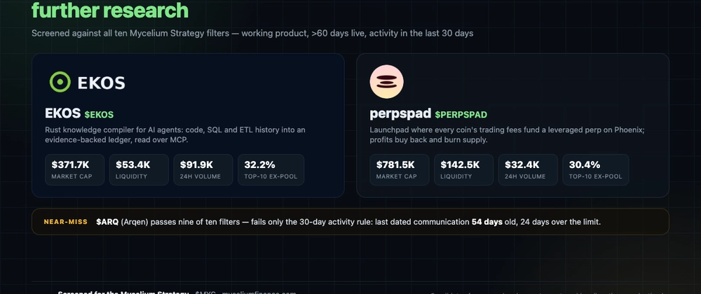

The Mycelium Strategy connects selected Solana projects through liquidity pools: more than 84% of tradable $MYC supply already sits in pools, and the fees fund the strategy's growth and new connections. That model only works if the next connection has a real product, a live market and enough depth to pair against. I screened Solana micro-caps against the ten filters below and kept the two that pass all of them; filling a third slot would have meant lowering the bar.
Market caps are CoinGecko; liquidity and volume are DexScreener, summed over pools and de-duplicated by pool address. Snapshot: 26 October 2026, 01:20 UTC.
| EKOS | perpspad | |
|---|---|---|
| Ticker | $EKOS | $PERPSPAD |
| Mint | CwubepDFJndzSKFmAMAm9u8Xx3PrizAwSq8hcGimpump | PerPsCe2SJ7Q25CN4R5TTX4fmBdmknE2hQmqCt96fHL |
| Website | https://ekos.dev/ | https://perpspad.fun/ |
| X | https://x.com/ekosproject | https://x.com/PerpsPadfun |
| Market cap (CoinGecko) | $371,707 | $781,476 |
| 24h volume (DexScreener, all pools) | $100,004 | $30,370 |
| Liquidity (DexScreener, dedup) | $53,398 across 2 pools | $142,493 across 11 pools |
| Days trading | 71 | 112 |
| Top-10 holders, pools excluded | 32.17% | 30.38% |
| Mint / freeze authority | revoked / revoked | revoked / revoked |
| LP locked | 99.83% of the main pool | 54.22% of the main pool, 0% elsewhere |
| Last verified activity | commit 26 Oct 2026 | X post 25 Oct 2026 |
EKOS compiles enterprise knowledge for AI agents: it reads source code, SQL, ETL pipelines and git history, then writes an append-only ledger where every statement carries provenance down to file and line, queryable over MCP. Users are engineering teams sitting on large legacy codebases.
Available today: the site, docs and one-line install.sh from the alexeyban/EKOS repository all resolve, and the codebase is Rust. Activity is unambiguous — release v1.1.0 on 14 October 2026, commits on 26 October at 00:11 UTC.
The token's documented job is contributor coordination: a staking pool funded with 3.5M EKOS runs 90 days from 22 October 2026, and burns have removed 33.1M of the original 1B supply. Supply on-chain is 966,366,818 and circulating equals total, so market cap equals fully diluted value. No unlocks are scheduled beyond 2.33M EKOS of founder vesting that vested but was never claimed.
Concentration is the weak point. Excluding the PumpSwap pool token account BSAx6msSrfEZzC97vfXuTG42Qx7HPUYnPxaPvzFZRWyg (7.357%, owned by pool 7CQHf8Gv9paKYwwsEoJ5DBY4BwDpF33cDBGK2HKCcDNW), the top ten hold 32.17%, and the largest unlabelled account holds 8.541% — roughly 82.5M EKOS with no label tying it to team or treasury. The token page lists 18M EKOS in Streamflow contracts (14M founder vesting plus a 4M lock to 27 July 2027), but those sizes do not appear as vesting accounts in the holder table I could read, so that lock is disclosed rather than verified. Safety is good: 99.83% of main-pool LP is locked, Rugcheck raises no flags, mint and freeze authorities are revoked. The mint is Token-2022, which some integrations handle badly.
For Mycelium the natural role is collaboration, not a pool: both sides already speak MCP, so compiling the strategy's documentation into an agent-readable ledger is a cheap pilot both communities could inspect. A MYC pair is the weaker option — $53K of liquidity is thin, and a second pool would split it.
perpspad is a launchpad where every coin's on-chain sub-wallet collects trading fees and opens a leveraged perpetual on a creator-chosen market, routed through Phoenix. Coins launch on Meteora's bonding curve and migrate to DAMM v2; creators pick from roughly 60 markets and 1x–10x leverage. Fees split 15% creator, 20% treasury, 65% launcher-chosen with at least 25% to perp collateral; realised profit divides 70% to the coin's buyback reserve, 15% creator, 15% treasury.
It is live: site, docs, stats and app all resolve, and the project posted a new pairing (AMZN) on 25 October 2026 after a 23 October space.
Market: $781,476 on 733,803,009 tokens — circulating equals total again — with $30,370 of 24-hour volume and $142,493 of liquidity across eleven pools, the Meteora DAMM v2 pool 84uf4YpzybB4vm8RsermBFqjGxThAETpyMbp5HvkVRJQ holding $112,738.
The gap is the token itself. Nothing on the site or in the docs says what $PERPSPAD entitles a holder to; the fee flows described belong to individual coins and the platform treasury. The link between product success and token value is undocumented, and I will not invent one. After excluding the Orca pool account 668VLAgH5ZhUVG9iqJUfSkotMc5HxtxNjTja6YLK4iQ5 (1.790%, owned by pool 5rZzBGgQCm8nZEew5VKvyQHYWRW7QSz16Azju669YyEu), the top ten hold 30.38%, the largest an unlabelled 7.089%. LP locking is partial: 54.22% of the main pool ($61,760) is locked, every other pool shows zero — the deep end is protected, the shallow end is not. Mint and freeze authorities are revoked per the docs and confirmed by Rugcheck, which warns of mutable metadata.
For Mycelium, liquidity pair is the defensible role: perpspad's pitch that fees should do work is close to Mycelium's thesis, and a MYC/PERPSPAD pool would route its launchers into the strategy's liquidity. A holding thesis is not supportable until the token's claim on fee flow is published.
Arqen runs gasless perpetuals with USDC margin and up to 10x at perps.arqen.trade, documented at docs.arqen.trade, passing nine of ten filters: $262,903 market cap (82.0M of 100M circulating), $11,202 of 24-hour volume, $50,644 of liquidity in one Meteora DAMM v2 pool — 1.3% above the floor — and 108 days of trading. Mint oEVufzrtcAvuefkbg2iQku9A6UbFh9f4V5kEiPARQEN, site https://arqen.trade/, X https://x.com/arqentrade. Mint and freeze authorities are revoked, 100% of main-pool LP is locked, top ten hold 41.02%, and Rugcheck flags mutable metadata.
It fails one filter: activity within 30 days. Its last dated communication is a pinned X post from 2 September 2026 — 54 days old, 24 days past the limit — and its Telegram has been silent since April. Until that changes, it is a product without a pulse.
None of this is a partnership, allocation or selection by Mycelium. Two of the three have an undocumented link between product success and token value, one has an unlabelled wallet holding 8.5% of supply, and both qualifying picks are thin enough that a MYC pair would change their market structure. Those are reasons to research further, not to allocate.
Discuss these findings and the Mycelium Strategy: https://discord.gg/5M7FsQcGq
AI-created for a @myceliumfinance bounty.
Sources
getTokenSupply, getTokenAccountsByOwner, getMultipleAccounts), 26 October 2026